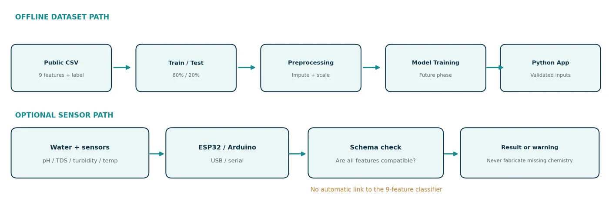
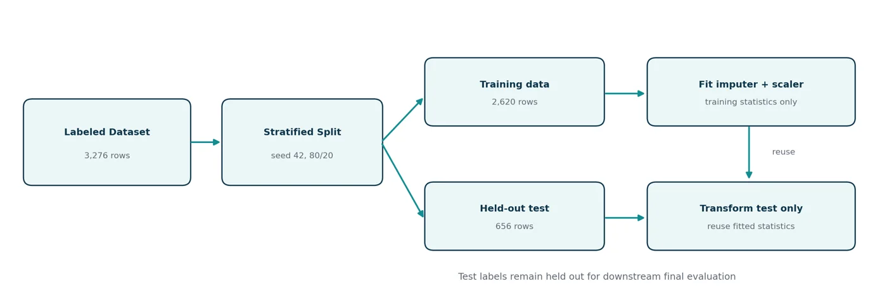
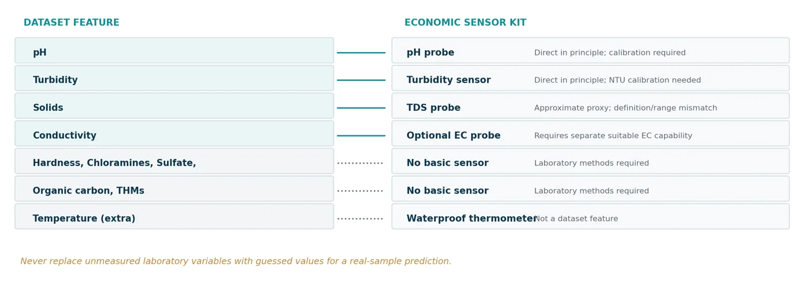
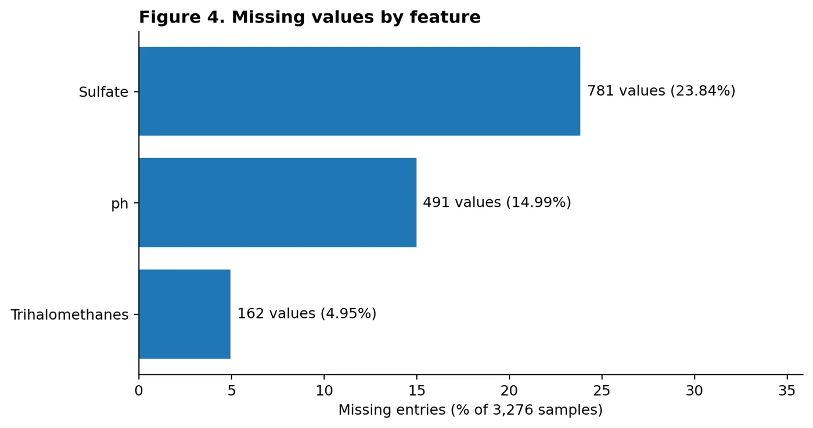
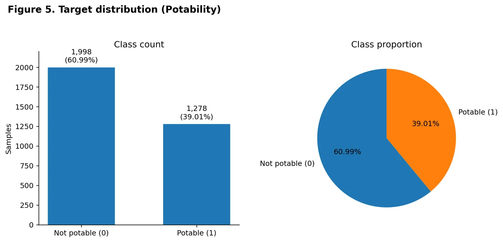
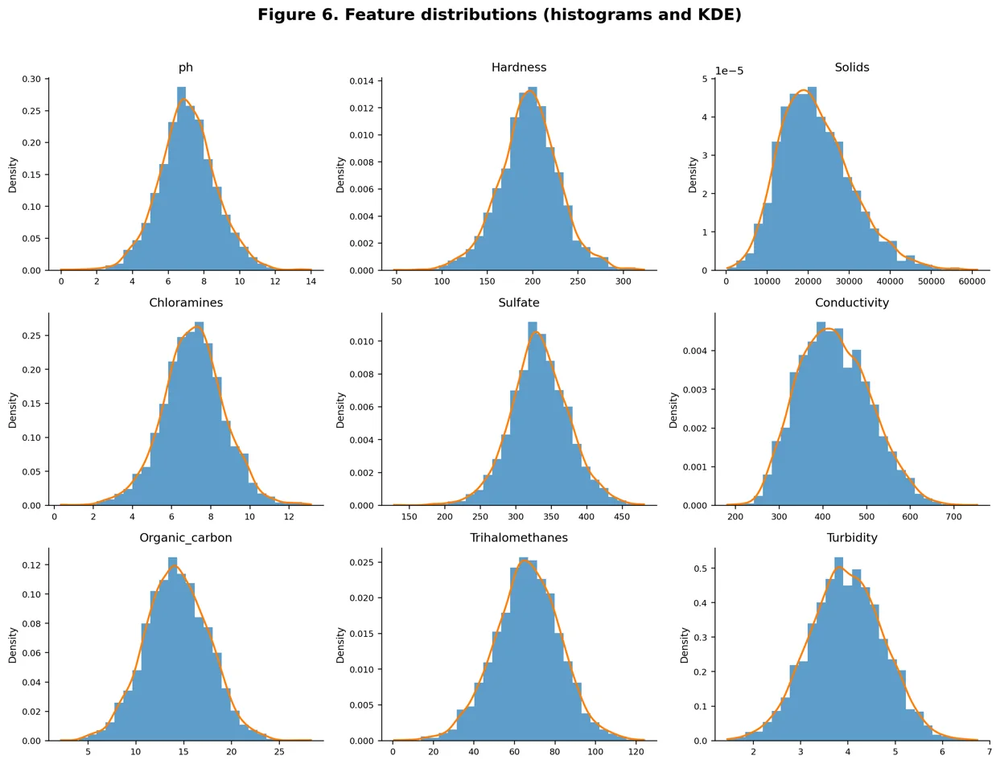
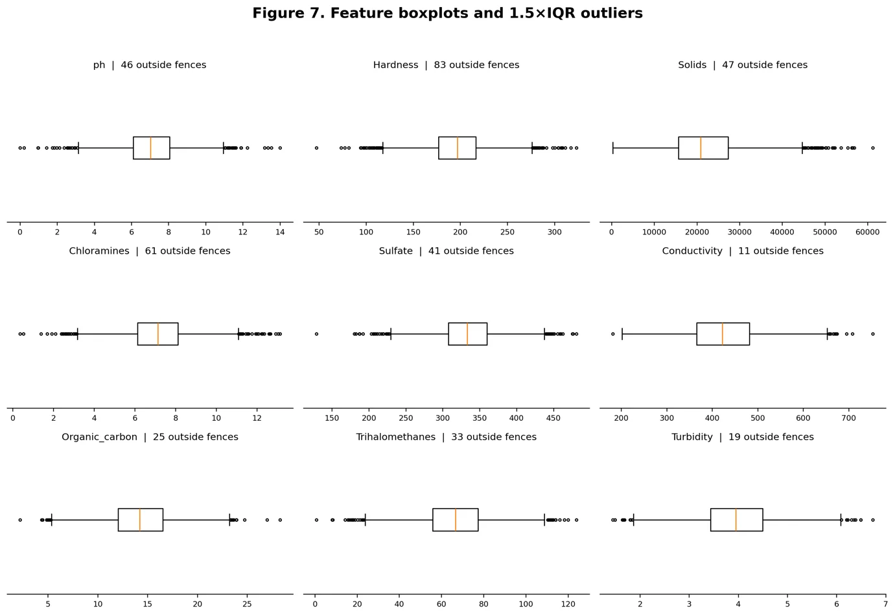
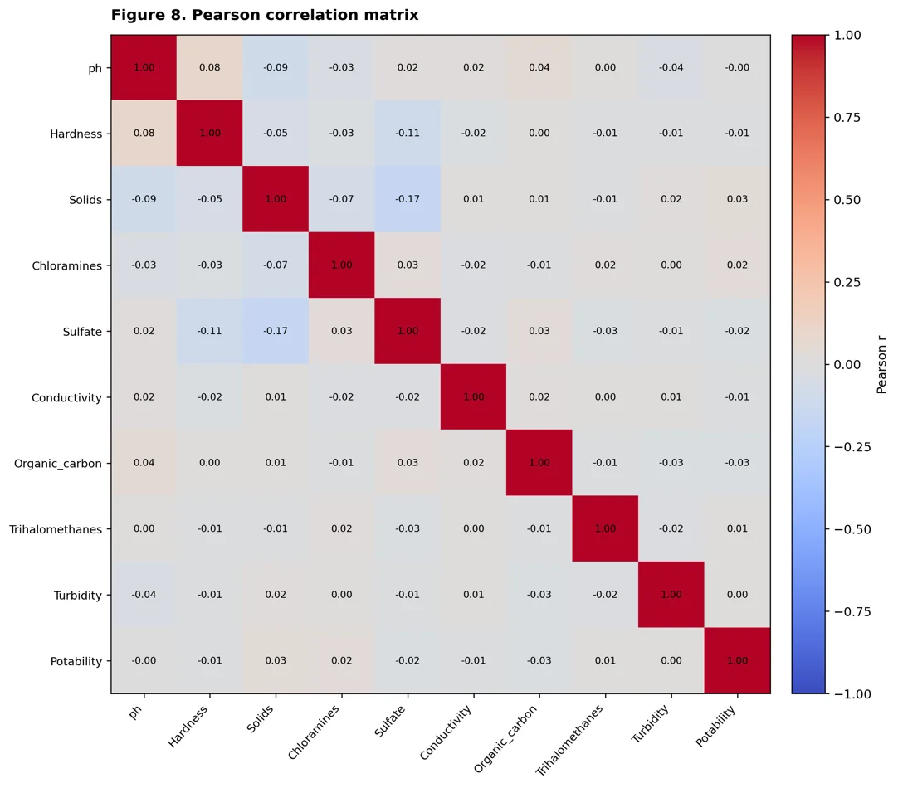
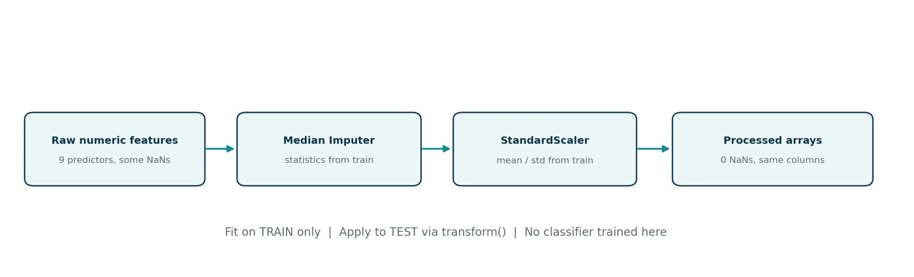

Abstract
This research paper documents the design, data exploration and leakage-safe preprocessing workflow for a smart water-quality monitoring prototype. The study uses the publicly available Kaggle Water Quality and Potability CSV containing 3,276 water samples, nine numerical physicochemical predictors and a binary Potability label. Initial exploration finds no duplicate rows, but 1,434 missing feature entries: 781 for Sulfate, 491 for pH and 162 for Trihalomethanes. The binary labels comprise 1,998 class-0 samples (60.99%) and 1,278 class-1 samples (39.01%). Feature distributions, 1.5×IQR outlier diagnostics and a Pearson correlation matrix are reported. The dataset is then stratified into 2,620 training and 656 held-out test records using random_state=42; a median imputer and standard scaler are fitted only on training data and applied unchanged to test data. Both transformed partitions contain zero missing values. The paper also documents the gap between the nine dataset features and an optional low-cost ESP32 sensor kit. No classifier performance or certified drinking-water safety claim is made.
Keywords: Water quality; potability labels; exploratory data analysis; stratified splitting; missing-value imputation; feature scaling; data leakage; ESP32.
1. Introduction, Problem Statement and Motivation
1.1 Introduction
Water quality monitoring protects public health and supports water-resource management. Whether a sample is suitable for drinking depends on several physical and chemical characteristics, so no single measurement describes its quality; measurements must be interpreted together against appropriate reference criteria.
Laboratory analysis offers measurements a small sensor kit cannot, but it depends on sample collection, specialized equipment and laboratory procedures, which makes repeated, immediate measurement inconvenient for demonstrations or preliminary monitoring. A compact screening approach can help, provided it is treated as an initial indication and not as a substitute for certified laboratory assessment.
Machine learning can examine relationships between several water-quality measurements and a potability label. A classifier can be trained on labeled examples and then estimate the class of new measurements. The quality of that estimate depends on how representative the training data are, how the features are defined, preprocessing choices and held-out evaluation.
The broader project proposes comparing baseline classifiers on a public potability dataset. As an optional extension, an ESP32 or Arduino Uno would collect pH, total dissolved solids (TDS), turbidity and temperature readings from low-cost sensors and send them to a local Python application. This paper reports the dataset exploration and preprocessing stages; trained-model performance is not yet reported.
1.2 Problem Statement
Challenge 1 — Many indicators: Water quality cannot be judged from one measurement, and full laboratory analysis is not always practical for rapid demonstration or preliminary monitoring.
Challenge 2 — Feature mismatch: A low-cost sensor kit measures only a subset of the variables in the public dataset, so device readings may not match the model’s training features.
The central methodological problem is to build a reproducible workflow that prepares compatible features for later binary classification while documenting the gap between the public dataset and hardware measurements. The system must never create, guess or substitute unmeasured chemical features and then present the resulting model output as a valid real-sample assessment.
1.3 Aim and Objectives
The long-term aim is an educational preliminary water-quality screening system combining a dataset-based machine-learning workflow with an optional low-cost sensor prototype. The immediate scope of this paper is narrower: dataset audit, visualization and preprocessing verification.
Inspect the public CSV dataset, types, missingness, duplicates, descriptive statistics and class balance.
Prepare a reproducible split and preprocessing pipeline that prevents train/test information leakage.
In a subsequent modeling phase, compare a DummyClassifier baseline with Logistic Regression, KNN, SVM and Random Forest.
In that later phase, evaluate on a held-out set using confusion matrices, class-specific precision/recall, F1, balanced accuracy and suitable ranking metrics.
Propose an interface that displays compatible inputs, results and explicit limitations; no inference interface is validated in the present work.
Optionally measure pH, TDS, turbidity and temperature using an ESP32 or Arduino and record calibration.
Document dataset provenance, feature compatibility and conditions required before live predictions are meaningful.
1.4 Motivation and Intended Users
The project explores whether accessible, repeatable data workflows can support educational water-quality analysis while keeping the limitations of public labels and inexpensive sensors visible. Separating model development from hardware measurement makes the software experiments independently testable. No formal stakeholder study was carried out; prospective users include students, demonstrators, researchers, developers and operators viewing preliminary indicators. The project is not intended to authorize drinking-water use or replace professional testing.
2. System Architecture and Project Scope
2.1 Architectural Overview
The system design separates offline model development from optional live measurements. The primary dataset path is a public labeled CSV followed by feature inspection, preprocessing, model training/evaluation in a future phase and a local user interface. A sensor path would collect a smaller set of readings over USB/serial. The two paths can converge only where input features, units, calibration and preprocessing are compatible with a validated trained model.

2.2 Offline Machine-Learning Workflow
Each record in the selected dataset is a water sample with nine numeric measurements and a Potability label (1 = potable and 0 = non-potable under the dataset’s labeling convention). The variables are pH, Hardness, Solids, Chloramines, Sulfate, Conductivity, Organic_carbon, Trihalomethanes and Turbidity. The data are inspected before a stratified 80/20 split; median imputation and standard scaling are fitted only on training data, then applied to held-out data without refitting.

In a future modeling stage, candidate estimators may include DummyClassifier, Logistic Regression, KNN, SVM and Random Forest. Comparisons should emphasize class-specific errors, F1 and balanced accuracy rather than accuracy alone. Hyperparameter selection and validation must occur within training folds, with preprocessing inside each estimator’s Pipeline. No training or evaluation scores are asserted in the present paper.
2.3 Optional Live-Sensor and ESP32 Integration
The proposed measurement prototype comprises a calibrated pH probe, turbidity sensor, TDS sensor and waterproof temperature probe, connected to an ESP32 or Arduino Uno. A distinct EC probe is needed if conductivity is independently measured. Sensor readings need documented units, calibration procedures and timestamps. The optional prototype is a measurement demonstrator until measurements and independently obtained potability labels support real-sample validation.
2.4 Dataset–Sensor Feature Gap
The public CSV defines nine model inputs, but the basic kit directly measures only pH and turbidity in principle, subject to calibration and measurement method. A low-cost TDS probe estimates dissolved solids indirectly and may not match the CSV’s Solids definition or concentration range. Conductivity can be read with a suitable optional EC sensor. Temperature is an additional measurement, not a model input. The remaining five physicochemical variables require separate laboratory/specialized methods.

Consequently, the nine-feature dataset model cannot be used with fabricated values for Hardness, Chloramines, Sulfate, Organic_carbon or Trihalomethanes. Viable later routes are to collect a new compatible labeled sensor dataset or train and independently evaluate a feature-restricted model using appropriate labels. Neither route is demonstrated in this paper.
2.5 MVP Scope
| Included in broader software MVP | Not claimed in this paper |
|---|---|
| CSV inspection and reproducible preprocessing | Certified drinking-water assessment |
| Exploratory plots and reports | Detection of every contaminant |
| Planned baseline model comparison | Trained-model performance or real-world validation |
| Possible local interface and saved model | Completed hardware demonstration or cloud/mobile app |
2.6 Scope, Limitations and Responsible Use
This study supplies a reproducible exploratory and preprocessing workflow, not a completed drinking-water classifier. Kaggle label provenance and representativeness have not been independently established. Sensor quality, calibration, operating conditions and measurement methods limit hardware claims. The interface, if later created, must not display unqualified “safe to drink” wording; any estimate would require consistent feature definitions, units and independently validated performance.
3. Dataset Description, Features and Target
3.1 Dataset Source and Structure
The primary dataset is the “Water Quality and Potability” CSV distributed on Kaggle by adityakadiwal [1], also identified in the October 2026 project proposal [2]. The supplied file is named water_potability.csv and contains 3,276 observations and 10 columns: nine numerical input features and the binary Potability target. All feature columns are floating-point numerical values and the target is stored as integer labels. No fully duplicated rows were detected. The dataset’s underlying sampling protocols, independent laboratory verification and representativeness are not established by the supplied materials; its labels should be interpreted as dataset annotations rather than certified safety outcomes.
3.2 Physicochemical Features
| Dataset feature | Physical / chemical meaning | Economic sensor compatibility |
|---|---|---|
| ph | Acidity/alkalinity (dimensionless pH scale) | pH probe; calibration needed |
| Hardness | Water hardness, largely calcium/magnesium content | No direct basic-kit measurement |
| Solids | Reported dissolved-solids concentration | Approximate TDS proxy only; range/method mismatch |
| Chloramines | Disinfectant-related chloramine concentration | Dedicated chemical test required |
| Sulfate | Sulfate ion concentration | Dedicated chemical method required |
| Conductivity | Electrical conduction by dissolved ions | Optional suitable EC probe |
| Organic_carbon | Organic-carbon-related concentration | Laboratory analysis required |
| Trihalomethanes | Chlorination-related disinfection byproducts | Specialized laboratory analysis |
| Turbidity | Water cloudiness / suspended particles | Turbidity probe, ideally NTU-calibrated |
The dataset uses differently scaled measurements: pH generally spans 0–14 in this supplied CSV, while Solids reaches 61,227 in the recorded numeric units. A commonly advertised low-cost TDS module range of approximately 0–1,000 ppm would not cover many of those Solids values; the proposed hardware therefore cannot be assumed to reproduce the CSV inputs without additional verification [2, 3].
3.3 Target Variable
Potability is the sole target: 0 denotes “not potable” and 1 denotes “potable” according to the dataset’s labels. The observed distribution is 1,998 records (60.99%) for class 0 and 1,278 records (39.01%) for class 1. The difference warrants stratified sampling and class-specific evaluation in later model training; it does not imply that any individual measured water sample is safe to drink.
3.4 Dataset and Hardware Compatibility Limitations
The proposed basic sensing device measures pH, turbidity, a TDS estimate and temperature; conductivity would require an appropriate additional EC sensor. Five important dataset variables have no direct basic-kit counterpart. The training feature schema must not be filled with fabricated or arbitrarily imputed real-sample chemistry. Also, temperature is not a training input in this dataset. The present notebook uses imputation only for *missing cells in the historical labeled dataset*, not for entirely unmeasured variables in a new live-sensor sample. These situations must not be conflated.
4. Data Exploration and Preprocessing Methodology
4.1 Dataset Inspection and Descriptive Statistics
The original dataset was loaded using pandas. Schema checks confirmed nine float-valued predictors, one integer-valued target, 3,276 rows and no exact duplicate rows. The descriptive statistics were computed before any imputation or scaling; each feature’s count therefore reflects its available non-null values.
| Feature | N | Mean | Median | Std. | Min | Max |
|---|---|---|---|---|---|---|
| ph | 2785 | 7.08 | 7.04 | 1.59 | 0.00 | 14.00 |
| Hardness | 3276 | 196.37 | 196.97 | 32.88 | 47.43 | 323.12 |
| Solids | 3276 | 22,014.09 | 20,927.83 | 8,768.57 | 320.94 | 61,227.20 |
| Chloramines | 3276 | 7.12 | 7.13 | 1.58 | 0.35 | 13.13 |
| Sulfate | 2495 | 333.78 | 333.07 | 41.42 | 129.00 | 481.03 |
| Conductivity | 3276 | 426.21 | 421.88 | 80.82 | 181.48 | 753.34 |
| Organic_carbon | 3276 | 14.28 | 14.22 | 3.31 | 2.20 | 28.30 |
| Trihalomethanes | 3114 | 66.40 | 66.62 | 16.18 | 0.74 | 124.00 |
| Turbidity | 3276 | 3.97 | 3.96 | 0.78 | 1.45 | 6.74 |
The largest numerical scale is found in Solids (mean 22,014.09), whereas pH has a mean of approximately 7.08. This difference supports feature standardization for scale-sensitive algorithms after the split. The pH range contains values of 0 and 14; these extreme recorded values warrant checking measurement provenance but are retained in this baseline rather than silently edited.
4.2 Missing Values Analysis
Missing entries are confined to three of the nine predictor columns. Sulfate contains 781 missing values (23.84% of rows), pH has 491 (14.99%) and Trihalomethanes has 162 (4.95%). The total of 1,434 refers to missing cells, not 1,434 distinct samples; 2,011 rows are completely observed. The target is fully observed.

Interpretation — Sulfate has the highest missingness rate, so discarding all partially observed rows would unnecessarily reduce the available sample size. A training-fitted median imputation baseline retains the original sample count. The missingness mechanism was not established and median replacement does not guarantee an unbiased reconstruction of unknown measurements.
4.3 Target Class Balance

Interpretation — There are more class-0 records (60.99%) than class-1 records (39.01%). This moderate imbalance motivates stratification at the train/test split and class-specific performance metrics if classifiers are evaluated later; reported accuracy alone could conceal different error rates across the classes.
4.4 Feature Distributions

Interpretation — Solids has noticeable right skew (sample skewness approximately +0.622), whereas several other feature distributions appear roughly symmetric. Conductivity has modest right skew (+0.264). These plots provide qualitative context, not a formal normality test. The differing numerical ranges, particularly for Solids versus pH, reinforce the need for careful preprocessing.
4.5 Outlier Analysis

| Feature | Outliers (1.5×IQR) | % of non-null rows |
|---|---|---|
| ph | 46 | 1.65% |
| Hardness | 83 | 2.53% |
| Solids | 47 | 1.43% |
| Chloramines | 61 | 1.86% |
| Sulfate | 41 | 1.64% |
| Conductivity | 11 | 0.34% |
| Organic_carbon | 25 | 0.76% |
| Trihalomethanes | 33 | 1.06% |
| Turbidity | 19 | 0.58% |
Interpretation — The greatest number of 1.5×IQR outliers occurs for Hardness (83), followed by Chloramines (61), Solids (47), pH (46) and Sulfate (41). Outlier points may represent valid rare measurements rather than errors, so no automatic deletion or winsorization was applied. The presence of unusual observations provides a practical robustness rationale for median imputation, although it does not prove that median is statistically optimal for every feature.
4.6 Correlation Analysis

Interpretation — Pairwise linear correlations between individual features and Potability are weak. The largest absolute observed feature–label Pearson association is for Solids (r ≈ +0.034); the other feature–label associations are closer to zero. The matrix does not establish causal associations, nor can it determine whether a nonlinear classifier will outperform linear methods. Comparative training and validation are required for those claims.
4.7 Stratified Data Splitting
The raw dataset was split using train_test_split(X, y, test_size=0.20, stratify=y, random_state=42). This produces 2,620 training records and 656 test records. The target proportions remain close to those of the original dataset. Train and test row-index sets are disjoint, and the test set is not used to fit any preprocessing object.
| Partition | Rows | Class 0 | Class 1 |
|---|---|---|---|
| Entire dataset | 3,276 | 1,998 | 1,278 |
| Training | 2620 | 1598 | 1022 |
| Held-out testing | 656 | 400 | 256 |
4.8 Median Imputation and Standardization
The scikit-learn Pipeline consists of SimpleImputer(strategy="median") followed by StandardScaler(). Its imputer is fitted exclusively on the 2,620-row training partition, and the fitted transformation is then applied to the held-out test partition with transform(). The scale parameters are also learned from imputed training observations. This avoids direct train/test preprocessing leakage. Reuse of the imputer within cross-validation later requires wrapping it within each model Pipeline rather than preprocessing all training observations before fold generation [4].

| Feature with missing entries | Median fitted on training data |
|---|---|
| ph | 7.0350 |
| Sulfate | 333.0735 |
| Trihalomethanes | 66.5657 |
StandardScaler centers each numeric feature by its training-derived mean and scales by its training-derived standard deviation. This normalization is appropriate for comparing feature scales before distance-based or linear-model experiments, but it does not remove original outliers. The original raw input CSV is preserved independently.
4.9 Verification and Reproducibility
The unified Notebook was executed from its first cell to its last using the supplied CSV. Assertions verified the exact schema and labels, 2,620/656 split, disjoint row indices, fitted medians matching training-only statistics, absence of NaN or infinite values in both processed partitions, and approximately zero training means and unit population standard deviations. The Pipeline and processed train/test partitions are exported as reproducible artifacts.
| Quality check | Observed result |
|---|---|
| All expected columns present | PASS — nine predictors plus Potability |
| Exact duplicate rows | 0 |
| Train/test split before preprocessing | PASS — 2,620 / 656 |
| Learned medians from training only | PASS |
| Missing values after preprocessing | 0 train / 0 test |
| Training standardized means and scales | Approximately 0 mean and 1 population SD |
| Unified Notebook Run All | PASS — no execution errors |
No classifier was trained or evaluated for this paper. Accordingly, the Notebook contains no accuracy, confusion matrix, recall, F1 or deployment inference claim. The existence of a preprocessing_pipeline.joblib file means a preprocessor has been saved, not a potability prediction model.
4.10 Discussion of Limitations
A single public dataset may not represent different regions, sampling conditions or independently validated potability standards. Unknown missingness mechanisms, extreme recorded values and the lack of confirmed laboratory provenance limit generalization. Most notably, the basic sensor kit cannot reproduce all nine dataset inputs. A later classifier must be evaluated on correctly matched, labeled data before its output is considered scientifically meaningful; drinking-water safety still requires appropriate certified testing.
References
[1] adityakadiwal, “Water Quality and Potability,” Kaggle dataset. https://www.kaggle.com/datasets/adityakadiwal/water-potability (accessed October 2026).
[2] Project team, “Smart Water Quality Monitoring System: System Design & Technical Proposal,” Version 1.0, October 2026 (provided project document).
[3] Mohamed Ali, “Water Quality Exploratory Data Analysis & Sensor Mapping Report,” project technical report, October 2026 (supplied internal source; hardware claims require independent validation).
[4] scikit-learn developers, “Pipeline,” “SimpleImputer,” “StandardScaler,” and “train_test_split” reference documentation. https://scikit-learn.org/stable/modules/compose.html ; https://scikit-learn.org/stable/modules/impute.html ; https://scikit-learn.org/stable/modules/preprocessing.html .
[5] Moamen, “Data Exploration (Part 1),” Jupyter Notebook; Youssef, “Data Cleaning and Preprocessing Pipeline,” Jupyter Notebook; Mohamed Ali, “task.ipynb,” Jupyter Notebook, supplied internal project files (October 2026).
[6] Baraa, “Smart Water Quality Monitoring System — Sections 1–2,” October 2026 (provided paper draft).
Methodological note: Section 1–2 contents were integrated from Baraa’s draft with tense/scope normalization; Sections 3–4 and all measured numerical results are derived from the supplied CSV and executable project notebooks. Figures 1–3 reproduce the supplied conceptual architecture in consistent formatting; Figures 4–9 are generated from actual analysis or preprocessing diagrams.
From methodology to a trained classifier.
The original paper stops at preprocessing. A subsequent experiment compared DummyClassifier, Logistic Regression, KNN, SVM and Random Forest using training-only stratified cross-validation. Random Forest achieved 66.16% held-out accuracy and 59.73% balanced accuracy—insufficient for drinking-water safety decisions.